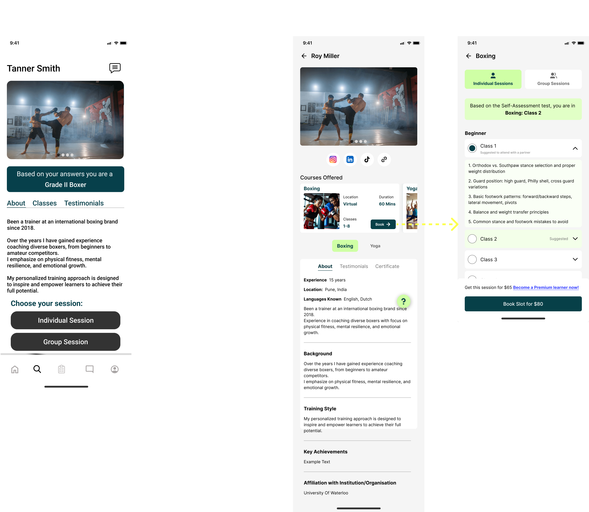

The Problem
The original design had a fundamental flaw: it placed a single "Book" button at the bottom of the profile. For multi-sport coaches, this forced users through an extra step—after clicking Book, they had to select which sport they wanted before proceeding.
The original wireframes assumed all coaches taught only one sport. However, SportsCove doesn't exclusively work with international-level coaches—the platform also includes retired athletes and lower-level coaches who often have expertise in multiple sports. For example, a boxing coach might also teach Muay Thai, or a yoga instructor might offer pilates.
The existing design hadn't accounted for multi-sport coaches at all, despite this being a reality from day one.
The Solution
I completely restructured the profile and booking flow:

Key Design Changes
Before (Left Screen)
- Generic "Grade II Boxer" label with no context
- All sports lumped together with no clear differentiation
- Single "Individual/Group Session" choice at bottom
- User had to click Book individual or group → Schedule
- No visibility into what each sport offering included
After (Middle & Right Screens)
- Courses Offered section: Each sport displayed as its own card with thumbnail, details, and dedicated Book CTA
- Sport-specific tabs: Clicking a sport updates the profile to show that sport's experience, certifications, and skill level
- Self-assessment integration: "Based on the Self-Assessment test, you are in Boxing: Class 2"
- Detailed class breakdown: Expandable accordions showing exactly what users will learn in each class
- Direct booking: Book CTA on each course card takes users directly to booking for that specific sport
Design Decisions & Reasoning
Course card separation: Each sport needed its own visual identity. This made it immediately clear that the coach offers multiple distinct services, not just variations of one sport.
Individual book CTAs: Moving the Book button from the profile bottom to each course card eliminated an entire step in the flow. Users' intent became explicit—when they click Book on "Boxing", we know exactly what they want.
Contextual information updates: When users switch between sport tabs, showing sport-specific experience and certifications reinforces expertise and builds trust.
Class transparency: The old design hid what classes entailed. By showing detailed class descriptions with learning outcomes, users could make informed decisions before booking.
Self-assessment integration: Instead of making users guess which class level to book, the self-assessment test automatically places them, reducing anxiety and wrong bookings.
Information Architecture
The profile structure now follows this hierarchy:
Courses Offered (primary)
About / Background
Testimonials
Certificates
When a sport tab is selected, these update contextually:
About(Years of Exp, training details etc)
Certifications
Testimonials
Addressing the Booking Friction
Original Flow
Browse profile → Click Book (bottom) → Select sport from list → Click Book required session type → Schedule
New Flow
Browse courses → Click Book on specific sport card → Choose the required session type tab → Schedule
By surfacing missing requirements and simplifying the flow, we reduced ambiguity and enabled faster, more confident user actions.
Additional Improvements
-
Session type flexibility: Individual and Group sessions are now shown upfront and can be easily switched between, unlike the previous flow where they were treated as separate paths requiring multiple steps to change.
-
Class structure clarity: Individual classes and Group classes are clearly differentiated, with their respective structures presented without forcing users to backtrack.
-
Pricing transparency: Class-specific pricing is displayed clearly before booking, allowing different costs for different classes.
-
Premium upsell: "Become a Premium learner now!" is positioned strategically after users are already engaged with the content.
Impact
Easy switching between Individual and Group sessions
Clear, class-specific pricing displayed before booking
Better class transparency
Scalable for any number of sports